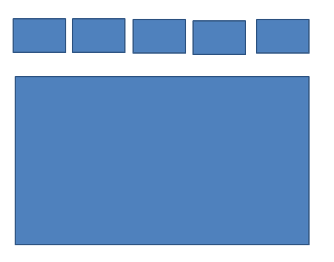
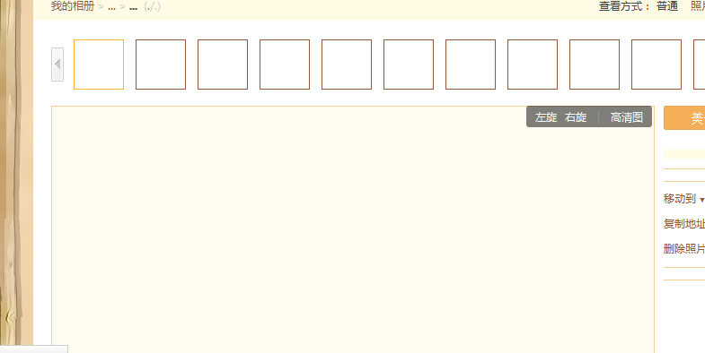
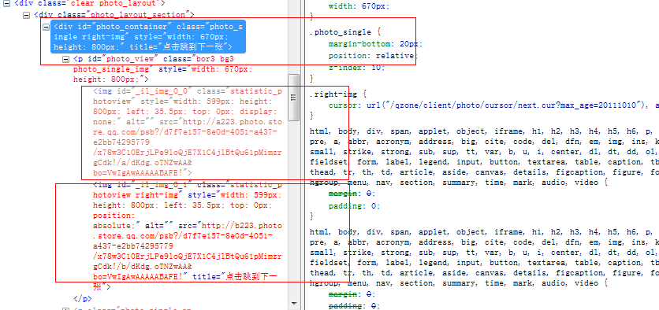
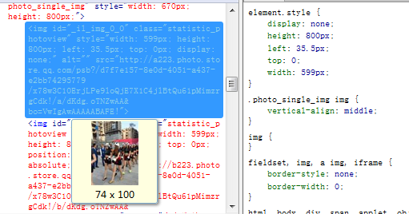
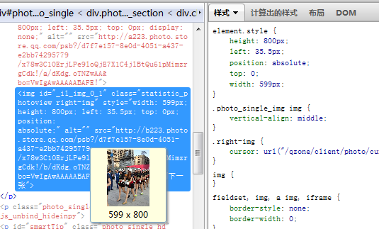

前言
此篇文章估计不会太长，有移除首页的风险，但是老夫（称老夫是因为我们真正的叶小钗其实都100多岁啦）是不会怕滴。所以，我来了哟！
题外话：今天我们一起还看了一道前端的面试题，而后我本来还想多找几道来做做，但是没找到什么合适的，各位有什么好的前端面试题请给我留言哦，我们一起来分析面试题进步哟！
前端时间，我与我们的产品有一次讨论，是针对图片压缩的，因为我对图片或者说PS这块是个小白，所以当时做了一个广告图片有100来k也直接给传上去了，结果被我们的同事搞起来一压缩，便只有50多k了，此次交流对图片压缩这块有了一点点心得，并且为第二次交流埋下伏笔，第二次便是图片由模糊变清晰的研究了。
网页图片格式
此处我先对我们的图片格式做一下普及吧，参考：
【整理】详说JPG,GIF及PNG各类型的图片格式
GIF
透明类型，可以全透明或者全不透明，半透明这种事情就不要找他了，并且这个家伙可以做动画哦
gif是一种无损耗的图片格式
gif采用lzw算法进行压缩，当压缩gif过程中像素由上到下进行压缩，也就是说横向的gif图片比纵向的小(500*10比10*500小)
gif支持可选择性的间隔渐进显示
JPEG
不支持透明
不支持动画
该图片非常容易损耗
支持隔行渐进显示（ie不支持，ie会再整个图片信息完全到达后再显示）
jepg尤其适合web上面的摄影图片和数字相册
PNG
支持各种透明，但在IE6下有bug需要使用滤镜处理
不支持动画
任何操作都不会损耗其质量
支持间隔渐进增强，但会造成图片尺寸变大：
png8(布尔透明)
相当于静态gif，只有256色，支持索引透明，就是指定一个像素点不是透明
png8(alpha透明)
可指定像素点的透明度，例如50%透明度
优点在于比png24/32小，效果一样，缺点为ie6不支持
png24
不透明，颜色很多不止256色，PS导出的png24事实上为png32
png32
和PS里面的PSD一样，包含图层和通道信息
以上是关于图片的一些信息，我们大概了解下便是，其中我要说一说其中的PNG，特别是交错png
PNG交错在使用浏览器欣赏该图片时就会以由模糊逐渐转为清晰的效果方式渐渐显示出来。PNG先进的交错式方法，使图像得以水平及垂直方式显像在屏幕上，加快了下載的速度，作用：交错可使下载时间感觉更短，并使浏览者确信正在进行下载。PNG无交错、不交错就没这个作用。
图片的显示
我们知道img标签在dom加载时候是不会加载的，而是在dom结构全部出来后并形成了渲染树（布局结束），才开始加载。
而其加载顺序也是从上而下的加载，意思是图片我们是先看到上面再看到下面，但是很明显这不是一个好的显示方式，我们若是一开始可以看到模糊的图形然后再慢慢变清晰是不是好很多呢？
肯定好很多啦。。。
于是我们讨论到如何实现，但是就说到了交错PNG，我当时虽然信了，因为我对此不太了解，但是下来思考下却感觉有点不对劲！
用户的疑惑
现在我们来想象下QQ空间的做法（这块纯粹瞎扯），我现在作为一个用户，我上传图片来了
① 我想将QQ空间作为云存储的地方，上传了我2M的毕业照
② 空间根据需求生成了一张缩略图与一张大图
③ 我们首先看到缩略图，而后看到大图，点击原图时候便看到我最初2M的照片
以上是我以为的逻辑，QQ空间是不是这个逻辑我们不去关注他，因为站在用户角度，我一定是想保留我最初的东西。
好了事到如今，QQ空间究竟怎么做的呢？？？那个太复杂了，我们也不去关注，我这里说下我是怎么做的。
实现图片由模糊到清晰
我们的相册显示一般是这个样子的：

上面是缩略图，下面是大图，在这里我们其实可以对其缩略图做文章！！！
我们在大图显示完之前可以用缩略图“代替”大图吗，来看看我们的逻辑：
① 缩略图在相册上方，其最先加载，就算在下方，因为缩略图尺寸很小加载十分迅速
② 最初将缩略图放到大图显示位置，将其大小设置为大图大小（此尺寸有多种方法可获取，比如上传时候便计算结束）
② 将大图布局置于缩略图前，因为缩略图已经展示，但是因为过大而显得有点模糊，但大图慢慢加载其由上至下变得清晰给人一种模糊到清晰的错觉
④ 流程结束
于是我们来看看我们的QQ空间吧，看之前我们用限速工具，给我们的火狐限速：
PS：限速后开空间巨慢。。。

怎么样，够慢了的吧！
注意看其由上到下的变化哦，然后我这里找出了证据
PS：我打开网上限制怎么还是很慢，看来是我网速慢的原因啦。。。

请看我这边用红框圈着的三块地方：
第一个为相册显示的容器，relative定位的
第二个为上面的小缩略图，很小的那种哦：

看吧，这里活生生的将人家扯那么大。。。。。
第三个框便是主角，大图啦：

结论
从其整个排布来看，与我们思考的一致，他这样做好处多多的有哦，比如我们这里上面的图片导航：
我们看到上面的缩略图早就显示出来了，点击下一张的时候缩略图会展示出来，不会出现空白的断层，然后大图慢慢的显示让用户愿意停在那里。
结语
好啦，今天我们研究了一道面试题，后面又研究了图片由模糊到清晰的方案，若是您有更好的解决方案不要藏着哦！
好啦，若是你有好的web前端面试题也请留下，我最近在做这方面的整理，后面对各位也会有帮助滴，最后留一张老夫的玉照吧！